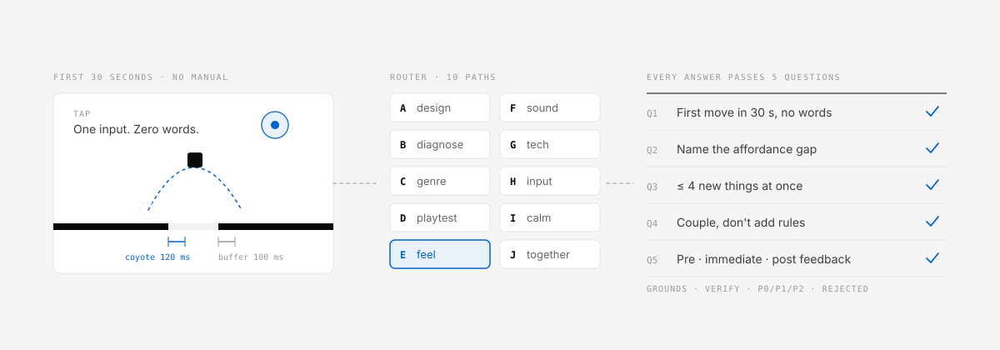

Coyote time & input buffer
Coyote time 100–150 ms and a 100 ms input buffer that consume both timers correctly — the fix for “the jump sometimes doesn't respond”.
Games nobody has to read instructions for.
A good door tells you whether to push or pull by its shape. When it needs a sign that says PUSH, it has already failed. This skill turns “you'll get it once I explain” into “you get it without being told” — then makes it feel good to touch and sound like something.

01What it is
Five questions turn a vague word into a verdict. Every answer ships with its grounds, a way to verify it, a P0/P1/P2 priority and what was rejected.
Can a first-timer make the first move with zero explanation?
Name exactly where what the player perceives differs from what is real.
Respect the working-memory limit when introducing rules.
Before adding a rule, can an existing variable carry the depth instead?
Are pre, immediate and post feedback all present?
02Router paths
The skill reads only the references that path needs, then answers in your language.
| Path | When you say… | You get |
|---|---|---|
| A · New design | “Come up with a mechanic” | Seven questions → core rules |
| B · Diagnosis | “The tutorial is too long, players drop off” | 10-point intuition audit → P0/P1/P2 fixes |
| C · Genre detail | “How should a rhythm game UI work?” | Genre conventions and patterns |
| D · Playtesting | “What do I ask testers?” | CARD / ORID protocol |
| E · Tiny games & feel | “The jump sometimes doesn't respond” | Physics, juice, endless generation |
| F · Sound | “Silent only on iPhone” | Web Audio, Tone.js, latency, iOS |
| G · Tech choice | “Three.js or PixiJS? Will it run on phones?” | Mobile-safe vs PC-only, by technique |
| H · Input beyond taps | “Control it with my face or body” | Input layer and camera input |
| I · Quiet & beautiful | “Like Monument Valley” | Calm experience, impossible geometry, art pipeline |
| J · Playing together | “Let two friends play online” | Co-located and networked sync |
03Features
Not just advice. The skill ships runnable implementations you can drop into a web game.
Coyote time 100–150 ms and a 100 ms input buffer that consume both timers correctly — the fix for “the jump sometimes doesn't respond”.
Unlock on first gesture, voice limits and a look-ahead scheduler. Diagnoses iPhone silence by checking the suspended state first.
Endless chunks that provably never produce an unclearable gap.
04Install
The plugin installs only the skill — not the READMEs, evals or build output. Restart, then say what you are working on.
/plugin marketplace add takaoumehara/intuitive-game-design-skill
/plugin install intuitive-game-design@intuitive-game-designRecommended.
git clone https://github.com/takaoumehara/intuitive-game-design-skill.git
ln -s "$(pwd)/intuitive-game-design-skill/skills/intuitive-game-design" \
~/.claude/skills/intuitive-game-designSymlink so edits take effect immediately, or copy into <project>/.claude/skills/ to share with your team through git.
python3 scripts/package.py # writes dist/intuitive-game-design.zipUpload the zip in Settings → Skills. Rebuild it yourself; the committed zip predates the plugin layout.
The tutorial in my mobile action game is 7 screens
long and 30% of players drop off there.Players tell me the jump "sometimes doesn't respond."Sound works in Chrome but there's nothing on iPhone.05FAQ
evals/README.md lists what a re-measurement must commit.dist/. Both are currently stale; rebuild them with the scripts in the repository.